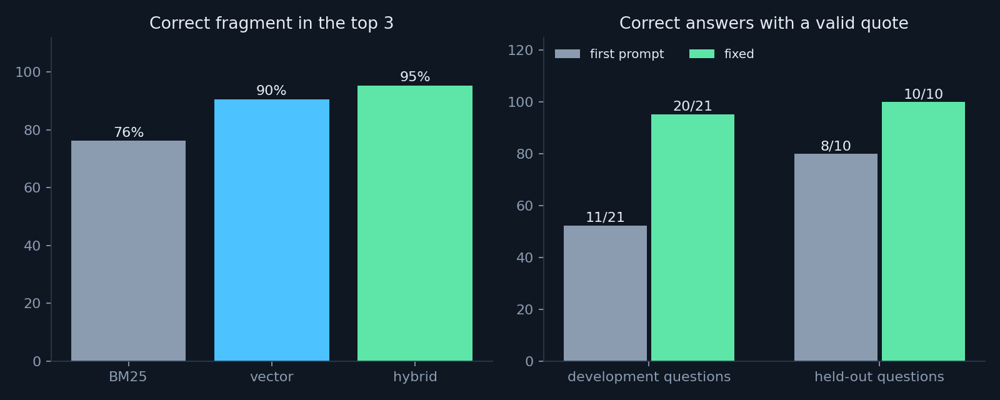

Evaluated RAG
Make AI cite its source or stay silent
When documents change between versions, how do you avoid a convincing answer taken from the wrong one?
Models qwen2.5 7B · nomic-embed-textRuns LocallyData Fictional corpus
95%correct fragment in the top 3
20/21correct on development questions
10/10on held-out questions
9/9refusals when there is no answer
The problem
A language model sounds just as confident when it knows and when it doesn't. In specifications and procedures, mixing versions is a costly mistake.
The solution
- Hard filter by document and version before searching.
- Hybrid search: keywords (BM25) and meaning (vectors).
- The quote must be verbatim, otherwise the answer is rejected.
- A person approves before anything counts as valid.
What it brings
Every answer can be audited: which fragment it came from and what was tested.
Measured results

Real runs, failures included
Try it on your document
Light in-browser version: keyword search (BM25), no model. Nothing is sent.
Limits. The first version scored 11 of 21 because it left answers empty. The corpus (36 fragments) is small and made up: it measures the method, not performance on real documents.